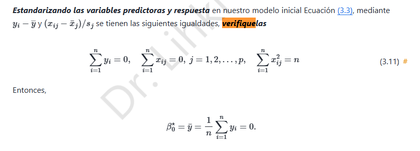

5. Ridge · Verificación de la estandarización (3.11)

5.1 Convención de normalización
El enunciado define, para cada columna \(j\), la media \(\bar x_j=\frac1n\sum_{i=1}^nx_{ij}\) y la escala poblacional
Tras la transformación \(\tilde x_{ij}=(x_{ij}-\bar x_j)/s_j\) y \(\tilde y_i=y_i-\bar y\), queremos demostrar las identidades indicadas en las notas.
5.2 Primera identidad: suma de la respuesta centrada
5.3 Segunda identidad: suma de cada predictor estandarizado
Este resultado implica que cada columna de la matriz estandarizada tiene media cero.
5.4 Tercera identidad: norma cuadrática
Como \(\sum_i(x_{ij}-\bar x_j)^2=ns_j^2\) por definición,
La diagonal de la matriz de productos cruzados es \(Z^TZ=[\sum_i\tilde x_{ij}\tilde x_{ik}]_{jk}\), y por lo anterior \((Z^TZ)_{jj}=n\).
5.5 Implicación para el intercepto
Ya vimos que \(\hat\beta_0=\bar{\tilde y}\). Por la primera identidad, \(\bar{\tilde y}=0\); en consecuencia,
Atención a la convención: si se utiliza la desviación típica muestral \(s_j^2=\frac{1}{n-1}\sum_i(x_{ij}-\bar x_j)^2\), la tercera identidad resulta \(n-1\), no \(n\). La igualdad del profesor exige el denominador \(n\). Si alguna columna es constante, \(s_j=0\) y debe excluirse o tratarse aparte.